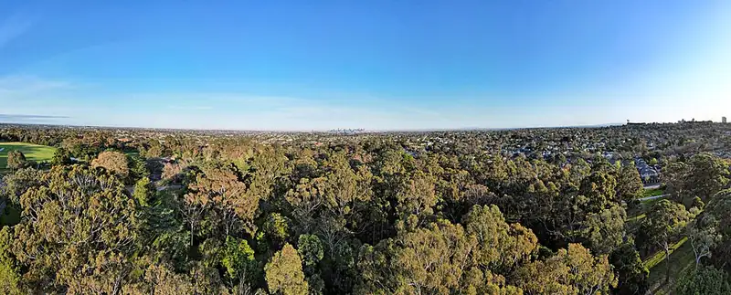

Wattle Park, Burwood
Wattle Park is a park in Burwood, in the Whitehorse City Council area, good for all ages. Alandale St/Riversdale Rd #59 (tram) is a 3-minute walk away, the nearest public toilet is about 96 m away with a baby change table and dogs are allowed on a lead.


Quick facts
- Toilets
- 96 m away, baby change, accessible
- Wheelchair access
- Yes
- Dogs
- On lead
- Public transport
- Alandale St/Riversdale Rd #59, tram (routes 70), 3 min walk
Details
- Dogs
- on lead (Parks Victoria)
- Wheelchair access
- yes (Parks Victoria)
- Food
- BYO allowed (Parks Victoria)
- Seasons
- Orchids and wildflowers late winter to spring (Parks Victoria)
- Good to know
- No rubbish bins: take everything home; Chalet area and barbecues closed after a fire (page notice); Melbourne Tramways Band one Sunday a month, October to April (Parks Victoria)
Questions parents ask
- Where is Wattle Park?
- Wattle Park is in Burwood, Victoria.
- Is Wattle Park free?
- Yes. It is a public park, free to visit.
- Can I bring my dog to Wattle Park?
- Yes, on a lead.
- Are there toilets at Wattle Park?
- The nearest public toilet is about 96 m away, with a baby change table.
- How do I get to Wattle Park by public transport?
- The closest stop is Alandale St/Riversdale Rd #59 (routes 70), a 3-minute walk.
- Is Wattle Park wheelchair accessible?
- Yes, it is wheelchair accessible.
Nearby places
- Playground at Wattle Park
Playground · BurwoodToilet nearbyFreeTram 4 min walk
- Playground on Boisdale Street
Playground · Surrey HillsFreeTram 2 min walk
- Wattle Park Conservation Area
Park · BurwoodFreeBus 1 min walk
- Foodrinkery
Cafe or restaurant · BurwoodBus 3 min walk
- Coopers Reserve
Park · CamberwellToilet nearbyDogs allowedFreeBus 3 min walk
- Fusion Café
Cafe or restaurant · BurwoodToilet nearbyBus 2 min walk